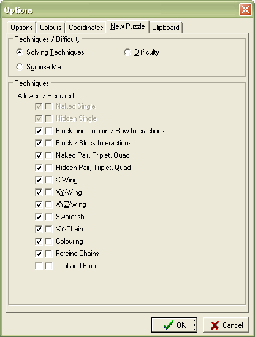
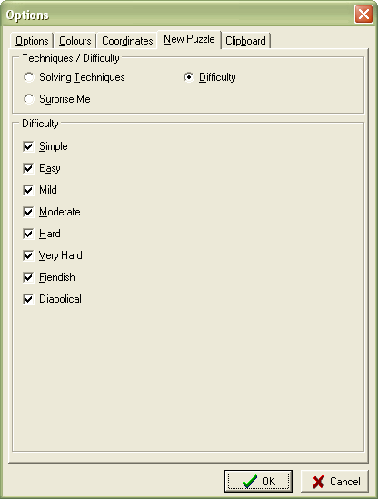

This tab allows you to specify the options used when creating new puzzles. It allows you to specify either the grade(s) required, or the solving techniques that can be used.
Notes:
1. Selecting required solving techniques,
particularly if you require more than one, can result in SadMan Software Sudoku taking a long
time to find a suitable puzzle. In addition, it may also be possible to solve
the generated puzzle using other techniques - many puzzles can be solved in more
than one way.
2. You can specify the required solving techniques or the difficulty, but
not both. They are mutually exclusive options.


Techniques / Difficulty Allows you to select a new puzzle based on the techniques required to solve it, or on its difficulty.